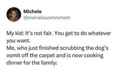

0


0

A researcher known as Chaotic Eclipse has released a proof-of-concept exploit for a new Windows zero-day dubbed MiniPlasma, which BleepingComputer confirmed can grant SYSTEM privileges on fully patched Windows 11 systems. The researcher claims the bug is effectively a still-exploitable version of a 2020 flaw Microsoft said it had fixed. From the report: At the time, the flaw was assigned the CVE-2020-17103 identifier and reportedly fixed in December 2020. "After investigating, it turns out the exact same issue that was reported to Microsoft by Google project zero is actually still present, unpatched," explains Chaotic Eclipse. "I'm unsure if Microsoft just never patched the issue or the patch was silently rolled back at some point for unknown reasons. The original PoC by Google worked without any changes."
BleepingComputer tested the exploit on a fully patched Windows 11 Pro system running the latest May 2026 Patch Tuesday updates. In our test, we used a standard user account, and after running the exploit, it opened a command prompt with SYSTEM privileges, as shown in the image [here]. Will Dormann, principal vulnerability analyst at Tharros, also confirmed the exploit works in his tests on the latest public version of Windows 11. However, he said that the flaw does not work in the latest Windows 11 Insider Preview Canary build.
The exploit appears to abuse how the Windows Cloud Filter driver handles registry key creation through an undocumented CfAbortHydration API. Forshaw's original report said that the flaw could allow arbitrary registry keys to be created in the .DEFAULT user hive without proper access checks, potentially enabling privilege escalation. While Microsoft reports having fixed the bug as part of its December 2020 Microsoft Patch Tuesday, Chaotic Eclipse now claims the vulnerability can still be exploited.
Read more of this story at Slashdot.
Nintendo is trying to secure a touchscreen-specific monster-catching patent that could be relevant to Palworld Mobile. Japan's patent office has initially rejected the application for lacking an inventive step over prior art, but the company could appeal or amend the claims. Games Fray reports: The Japan Patent Office (JPO) has now made a new monster-catching patent application by Nintendo public. Patent Application No. 2026-019762 covers monster-catching of the kind already asserted against the PC and console versions of Palworld and is from the same patent family as two of the three patents Nintendo is already asserting against Palworld, but with a touchscreen focus. Potential targets are the upcoming Palworld Mobile game and Tencent's Roco Kingdom: World, which is presently available only in China but likely to expand internationally. Nintendo filed the application this year with a request for a fast-tracked review. The JPO has indeed been quick, and the response is that Nintendo's application lacks an inventive step over the prior art.
Nintendo already amended the claims in February and can try to amend them again. It can try to persuade the examiner and potentially appeal the decision. But the initial rejection suggests that Nintendo will not obtain the desired touchscreen monster-catching patent quickly. The rejection was communicated on April 24, 2026. Nintendo could abandon the application now, but Nintendo being Nintendo, they are more likely to try to persuade the examiner to arrive at a different conclusion, even though the reasons for the rejection are strong. In many patent examination processes, the initial rejection is essentially just an invitation to present one's best arguments. Here, however, the rejection notice is so well-reasoned that it will be an uphill battle for Nintendo. Nintendo's application would cover a touchscreen-controlled game in which a player moves through "a field in a virtual space," uses "a capture item for capturing a field character," and can summon "a battle character" to fight that creature. During combat, the game would display "a plurality of commands including at least an attack command and an item command," selected through "an operation input using the touch panel."
The key claim is that when the capture item is used "during a battle" or "in a non-battle state," the game performs "a capture success determination," and, if successful, "the field character is captured and set to a state owned by the player."
Read more of this story at Slashdot.
Meta is expected to begin cutting about 8,000 jobs this week as it pours more money into AI infrastructure and looks to "offset" other investments, with additional layoffs reportedly possible later this year. According to CNBC, the morale has worsened inside the company. "Internally, there's an emerging sense of dread across wide swaths of the company," the report says, citing current and former Meta employees. "That's in part because more cuts are expected this year, including a potential round of layoffs in August, followed by another round later in the year, some of the sources said." From the report: [...] Whatever anxiety investors are experiencing, the feelings inside the company are more intense, with some longtime staffers questioning Meta's AI pursuits under AI chief Alexandr Wang, while also weighing if now is the time to leave for opportunities at other companies in the AI race, according to current and former employees. Data aggregated by Blind, an anonymous professional network that requires users to verify their employment with a work email address, reveals some of the internal malaise. Meta's overall rating by employees on Blind has declined 25% from a peak in the second quarter of 2024 to the current period, with a 39% drop in its culture rating. In every category other than compensation, Meta has seen a ratings decline and dramatically underperforms rivals Amazon, Google and Netflix, the Blind data reveals.
The company's full-court press with AI included the recent debut of an employee tracking tool intended to collect data from staffers' actions, such as mouse movements and keystrokes on their work computers. The Model Capability Initiative, or MCI, as it's called, is part of Meta's efforts to train AI models to power digital agents that can perform various coding and white-collar tasks. Employees have characterized the data tracking tool as "dystopian," according to messages viewed by CNBC, with some workers expressing fear that personal information could be leaked. Some Meta workers have noted that their workplace computers appear slower since the company initiated the project, adding to their frustration, sources said.
Meta workers responded by creating an online petition that urges Zuckerberg and leadership to shutter the project. "Collecting and repurposing this kind of data raises serious concerns around privacy, consent, and trust in the workplace," the petition says. "It should not be the norm that companies of any size are permitted to exploit their employees by nonconsensually extracting their data for the purposes of AI training." Further reading: NYT: 'Meta's Embrace of AI Is Making Its Employees Miserable'
Read more of this story at Slashdot.
After three weeks of testimony, which was covered extensively here on Slashdot, a U.S. jury on Monday ruled against Elon Musk in his lawsuit against OpenAI, finding that he waited too long to bring his claims that the company betrayed its nonprofit mission. Reuters reports: The trial had widely been seen as a critical moment for the future of OpenAI and artificial intelligence generally, both in how it should be used and who should benefit from it. Following the verdict, Musk's lawyer said he reserved the right to appeal, but the judge suggested he may have an uphill battle because whether the statute of limitations ran out before Musk sued was a factual issue. "There's a substantial amount of evidence to support the jury's finding, which is why I was prepared to dismiss on the spot," U.S. District Judge Yvonne Gonzalez Rogers said.
In his 2024 lawsuit, Musk accused OpenAI, its Chief Executive Sam Altman and its President Greg Brockman of manipulating him into giving $38 million, then going behind his back by attaching a for-profit business to its original nonprofit and accepting tens of billions of dollars from Microsoft and other investors. Musk called the OpenAI defendants' conduct "stealing a charity." OpenAI was founded by Altman, Musk and several others in 2015. Musk left its board in 2018, and OpenAI set up a for-profit business the next year. OpenAI countered that it was Musk who saw dollar signs, and that he waited too long to claim OpenAI breached its founding agreement to build safe artificial intelligence to benefit humanity. "Mr. Musk may have the Midas touch in some areas, but not in AI," William Savitt, a lawyer for OpenAI, said in his closing argument.
The verdict followed 11 days of testimony and arguments where Musk's and Altman's credibility came under repeated attack. Lawyers for OpenAI embraced each other after the verdict was announced. Microsoft faced an aiding and abetting claim. In a statement, a Microsoft spokesperson said, "The facts and the timeline in this case have long been clear and we welcome the jury's decision to dismiss these claims as untimely."
Recap:
Musk Accused of 'Selective Amnesia', Altman of Lying As OpenAI Trial Nears End (Day Twelve)
OpenAI Trial Wraps Up With 'Jackass' Trophy For Challenging Musk (Day Eleven)
Sam Altman Testifies That Elon Musk Wanted Control of OpenAI (Day Ten)
Microsoft CEO Satya Nadella Testifies In OpenAI Trial (Day Nine)
Sam Altman Had a Bad Day In Court (Day Eight)
Sam Altman's Management Style Comes Under the Microscope At OpenAI Trial (Day Seven)
Brockman Rebuts Musk's Take On Startup's History, Recounts Secret Work For Tesla (Day Six)
OpenAI President Discloses His Stake In the Company Is Worth $30 Billion (Day Five)
Musk Concludes Testimony At OpenAI Trial (Day Four)
Elon Musk Says OpenAI Betrayed Him, Clashes With Company's Attorney (Day Three)
Musk Testifies OpenAI Was Created As Nonprofit To Counter Google (Day Two)
Elon Musk and OpenAI CEO Sam Altman Head To Court (Day One)
Read more of this story at Slashdot.
An anonymous reader quotes a report from the Wall Street Journal: Going back to grad school has long been the Plan B of young professionals who aspire to climb higher in their careers or struggle to get promoted in a tough job market. New data show that getting a master's degree isn't the guarantee it used to be. The unemployment rate for workers under 35 with a master's degree has rarely been higher in the past 20 years, according to the Burning Glass Institute, a labor-market think tank focused on the future of work, which analyzed data collected by the U.S. Bureau of Labor Statistics going back to 2003.
At the same time, the unemployment rate for workers under 35 with a Ph.D., law degree or medical degree has rarely been lower. "For most of the past two decades, these lines moved together -- not anymore," said Gad Levanon, chief economist of Burning Glass. Levanon has a theory about why the payoffs for advanced degrees have uncoupled: "More degrees chasing fewer of the positions those degrees were meant to unlock." [...] While degrees from law school and medical school amount to a license to practice, master's degrees are more of a signal, Levanon said. And a signal loses value when so many people have one, he added: "It's hardly a sure bet to securing a good job."
Now master's-degree holders under 35 are at the 77th percentile of unemployment, where the 50th percentile is normal, according to the Burning Glass analysis. Even associate-degree holders have had a higher employment level for the past year. Unemployment among master's-degree holders has been worse only about a quarter of the time in the past 20-plus years. There was a stint during the Covid-19 pandemic when this cohort was out of work at higher rates, and a more prolonged stretch as the U.S. climbed out of the recession in 2008 and 2009. "Every indication is hiring managers now are more receptive than ever to the idea that a person doesn't need a graduate degree to be competitive," said Johnny C. Taylor Jr., president of SHRM, the chief lobbying group for human-resource professionals.
"We are seeing that, hands down, especially in the last two or three years with AI," he said of job readiness. Employers just want to know, "Can you do it?"
Read more of this story at Slashdot.
Microsoft is testing long-requested Windows 11 customization options, including a resizable taskbar, smaller taskbar buttons, and a more configurable Start menu that lets users reduce recommended content. BleepingComputer reports: Starting with Windows 11 Insider Preview Build 26300.8493, the taskbar can now be configured to use smaller buttons and moved to the bottom, top, left, or right side of the screen. "The ability to move the taskbar to the top or sides of the screen has been one of the most requested features, and we are bringing it to Windows 11," said Diego Baca, partner director of Microsoft Design. "With this update, when small taskbar is enabled, you get smaller icons, a shorter taskbar, and more vertical space for your apps (see video below). No restart or sign-out is required."
[...] Microsoft is also rolling out changes to give Windows users more control over the Start menu, allowing them to toggle off recommended content and customize its size. "These controls are designed to work together. If you want a Start menu with just your pinned apps, you can turn off Recommended and All," Boca added. "If you want a full Start that shows everything, you can leave it all on. The goal is simple: it is your choice, and it should be easy to make." However, Microsoft will maintain a list of recently installed apps, as it is a key way for users to discover new applications alongside the Microsoft Store.
Furthermore, Microsoft is improving file relevance by adjusting how files are displayed and ordered to prioritize the most relevant items, and will also allow users to hide their name and profile picture from the Start menu. [...] In addition to taskbar and Start menu improvements, the company plans to reduce notifications, simplify Windows settings, and ensure that device setup on new Windows PCs requires fewer reboots. Microsoft is also working on improving Windows search, aiming for a more consistent experience across the Start menu, taskbar, File Explorer, and Settings.
Read more of this story at Slashdot.
Today Linus Torvalds announced another Linux release candidate on the kernel mailing list. But he also highlighted "documentation updates" to address a new problem.
"The continued flood of AI reports has basically made the security list almost entirely unmanageable, with enormous duplication due to different people finding the same things with the same tools." (The new documentation says the security team has found "bugs discovered this way systematically surface simultaneously across multiple researchers, often on the same day.")
TORVALDS: People spend all their time just forwarding things to the right people or saying "that was already fixed a week/month ago" and pointing to the public discussion.
Which is all entirely pointless churn, and we're making it clear that AI-detected bugs are pretty much by definition not secret, and treating them on some private list is a waste of time for everybody involved — and only makes that duplication worse because the reporters can't even see each other's reports.
AI tools are great, but only if they actually help, rather than cause
unnecessary pain and pointless make-believe work. Feel free to use
them, but use them in a way that is productive and makes for a better
experience.
The documentation may be a bit less blunt than I am, but that's the
core gist of it.
The new documentation offers this overview. "It turns out that the majority of the bugs reported via the security team are just regular bugs that have been improperly qualified as security bugs due to a lack of awareness of the Linux kernel's threat model."
"So just to make it really clear," Torvalds said at the end of his post. "If you found a bug using AI tools, the chances are somebody else found it too.
"If you actually want to add value, read the documentation, create a patch
too, and add some real value on *top* of what the AI did. Don't be the
drive-by 'send a random report with no real understanding' kind of
person. Ok?"
Read more of this story at Slashdot.
160 miles north of New York City, a man was convicted of manslaughter "with the help of license plate reader technology," reports a local news station. In the small town of Troy (population: 51,000), the mayor described the cameras as "a critical tool" in that investigation. But locals and city officials "have raised concerns about who can access the data collected locally, along with data security, privacy invasions and use by federal authorities, including U.S. Immigration and Customs Enforcement, reports WNYT:
When Troy's contract came up for renewal, Mayor Carmella Mantello wanted to keep paying Flock and the council paused payments. The mayor then issued a public safety emergency declaration to keep the license plate readers active. The council has filed a lawsuit to overturn that..."If this illegal emergency order is left unchallenged, we give this mayor and any future mayor regardless of their political party or ideology, unchecked authority to issue an emergency declaration whenever they disagree with the council on any issue," [said Troy council president Sue Steele].
"The technology that's in place today is not the technology of six years ago," council president Steele told another local news station. "We have AI, we have rapidly changing and advancing technology. So that begs the need for regulations to protect certain data." The American Civil Liberties Union warns that Flock will use AI to let law enforcement search its trove of videos.
But "Listen, if it was infringing on people's rights, people's liberties, we'd be the first to get rid of it. We have safeguards in place," [mayor] Mantello responded. Mantello noted that data captured by Troy's Flock cameras is only being shared with other local municipalities.
Steele said the data had been shared nationally until she and other elected officials raised concerns. "As far as sharing with local law enforcement, that's necessary in the normal course of investigations. The concern is what Flock does with this data: sharing it with ICE, for instance, and other nefarious outlets," Steele said.
As the debate continues over the small city's 26 Flock cameras, a columnist in Albany wrote that "it's a good thing. We should be asking questions about the growing surveillance state. We should be debating whether this is the future we want."
As the American Civil Liberties Union noted, [Flock] has quietly built a broad mass-surveillance infrastructure, with cameras installed in 5,000 communities around the country, and is continually expanding how that network is used. Did we ask for that? Did we vote for it? Not really. The cameras have been installed in municipality after municipality, mostly with little discussion or controversy, which makes us like the proverbial frogs who didn't notice the water getting warmer until it was boiling. Suddenly, surveillance cameras are everywhere; we're always being watched...
[T]he City Council's Democratic majority is considering legislation that, among other steps, would require that data collected by the cameras be generally deleted after 48 hours and that the city be more transparent about how the cameras are used.
The controversy and pushback continues to draw local coverage. The mayor complains the proposed rules restricts the cameras "almost exclusively to cases involving individuals with outstanding felony arrest warrants or situations where officers can determine in advance that an incident will result in a felony charge... This is beyond reckless."
But the Albany columnist still argues many of America's Flock cameras are unnecessary and are "being installed just because... It's worth considering where this might lead and whether the future we're installing is the future we want."
Read more of this story at Slashdot.
Forbes describes it as "definitely already out there, and under active exploitation according to the U.S. Cybersecurity and Infrastructure Security Agency, urging all organizations to prioritize timely remediation as the attack vector poses a significant risk."
"We have issued CVE-2026-42897 to address a spoofing vulnerability affecting Exchange Outlook Web Access (OWA)," Microsoft told SecurityWeek. "We recommend customers enable EEMS to be better protected, and to follow our guidance available here."
Microsoft this week patched 137 vulnerabilities with its Patch Tuesday updates and the cybersecurity industry was surprised to see that the latest updates did not address any zero-days. However, a zero-day was disclosed just 48 hours later, on May 14... described as a spoofing and XSS issue affecting Exchange Server Subscription Edition, 2016, and 2019. "Improper neutralization of input during web page generation ('cross-site scripting') in Microsoft Exchange Server allows an unauthorized attacker to perform spoofing over a network," Microsoft said in its advisory.
The company noted that the vulnerability affects Exchange Outlook Web Access (OWA) and an attacker can exploit it by sending a specially crafted email to the targeted user. "If the user opens the email in Outlook Web Access and certain interaction conditions are met, arbitrary JavaScript can be executed in the browser context," Microsoft explained.
CSO Online shares more details. "Admins should note there are known issues once the mitigation is applied either manually or automatically through the EM Service."
- OWA Print Calendar functionality might not work. As a workaround, copy the data or screenshot the calendar you want to print, or use Outlook Desktop client.
- Inline images might not display correctly in the recipient's OWA reading pane. As a workaround, send images as email attachments or use Outlook Desktop client...
- Admins may get a message saying "Mitigation invalid for this Exchange version." in mitigation details. This issue is cosmetic and the mitigation does apply successfully if the status is shown as "Applied". Microsoft is investigating how to address this glitch.
Forbes notes "It's been something of a rough few days for Microsoft Exchange on the security vulnerability front," since this week also saw a zero-day demonstrated at the Pwn2Own Berlin hacking event, "which has been responsibly disclosed and not released into the wild."
The Berlin event got off to a flying start on May 14 as Windows 11 was hit by no less than three zero-day exploits. On day two, hacking teams were no less successful, chaining together three new vulnerabilities in Microsoft Exchange in order to achieve the holy grail of SYSTEM-level remote code execution. Such was the level of this achievement that Orange Tsai from the DEVCORE Research Team was rewarded with a $200,000 bounty payment in return for immediately handing over all the technical details to the event organizers.
"This is, in fact, good news," Forbes writes, since "full details of the vulnerabilities underlying the exploits, along with the technical nature of the exploit code itself, will be handed over to Microsoft, which will then have 90 days to provide a fix before any details are made public."
Read more of this story at Slashdot.
The CFTC says it is ramping up efforts to catch insider trading and market manipulation in prediction markets, using AI tools, blockchain tracing, and other surveillance systems to flag suspicious bets. It's also monitoring activity by U.S. traders accessing offshore platforms like Polymarket through VPNs. Wired reports: [T]he Commodity Futures Trading Commission, which oversees prediction markets, wants you to know that it's watching very, very closely. The agency is searching for suspicious behavior from traders within the United States who have been sneaking onto offshore markets, including Polymarket's crypto platform -- which is blocked stateside -- by using virtual private networks. "We're going to find them, and we're going to bring actions," agency chairman Michael Selig told WIRED this week, speaking from the CFTC's headquarters in Washington, DC. Selig says the agency, which is especially lean right now, is staffing up. Like so many other AI-pilled workplaces, the CFTC is also leaning into automation to handle the growing workload, including tools that analyze trading patterns and flag potential manipulation. "You've got so much data," Selig says. "When we feed it into AI, we get really great information. It can help us understand things, like where we might want to investigate, or when we might need to send a subpoena to a trader."
In addition to proprietary surveillance systems developed in-house, the agency's arsenal includes third-party blockchain tracing tools like Chainalysis for crypto platforms, and market abuse detection software including Nasdaq Smarts for centralized markets. (Beyond Nasdaq Smarts, the agency did not specify which AI tools it uses and declined to share more specific examples.) [...] Selig recently told Congress that the company is pursuing "hundreds, if not thousands" of insider trading tips. Investigations are not limited to federally regulated exchanges. "We're surveilling the markets on a global basis," he tells WIRED.
Selig says that the agency will exert extraterritorial jurisdiction -- its legal ability to enforce its laws beyond traditional boundaries -- when it finds suspicious activity on offshore platforms like Polymarket, though he says it's a case-by-case approach. "We use it in extreme circumstances," he says, with an eye towards whether charges have a strong chance of sticking in court. "In any extraterritorial litigation, there's going to be challenges to our authority, and that could also impair our ability to bring cases in the future." According to Selig, the 2010 Dodd-Frank Act allows the CFTC more leeway to pursue this kind of enforcement action, by giving it more authority over foreign swap activities that impact the US. When appropriate, the agency works with regulators from other countries, too. "For cases where we're not sure we'll win, or it's less in our wheelhouse and more of a foreign matter, we would relay it to a foreign regulator," he says. "We're constantly referring cases." [...] Selig is insistent that the CFTC is only just getting started. The agency will identify wrongdoers, he says -- no matter "how large or how small."
Read more of this story at Slashdot.
An anonymous reader quotes a report from the New York Times: The World Health Organization declared on Saturday that the spread of the Ebola virus in the Democratic Republic of Congo and Uganda was a global health emergency. The announcement was made a day after Africa's leading public health authority reported that an outbreak in a province in the northeast of the country was linked to dozens of suspected deaths. By Saturday, cases had also been confirmed in Kampala, the capital of Uganda, the W.H.O. said.
In Congo's Ituri province, where the outbreak was first identified, 246 suspected cases and 80 deaths attributed to the virus had been reported, although only eight cases had been definitively linked to the virus through laboratory testing. There is no approved vaccine and no therapeutics for the Bundibugyo species of Ebola behind the outbreak, according to the W.H.O. The scale of the outbreak could be far larger than has been detected and reported, the W.H.O. said in declaring a "public health emergency of international concern." It added that there were "significant uncertainties" about the precise number of people infected and the "geographic spread."
The W.H.O.'s declaration signals a public health risk requiring a coordinated international response, and is intended to prompt member countries to prepare for the virus to spread and to share vaccines, treatments and other resources needed to contain the outbreak. [...] The risk of the outbreak spreading is exacerbated by a humanitarian crisis, high population mobility and a large network of informal health care facilities in the area, the agency said. Containing an Ebola outbreak depends on the speed and scale of the public health response. The virus is transmitted through direct contact with the bodily fluids of an infected person, putting family members and caregivers at particular risk. Tracing people who may have come into contact with sufferers, isolating and treating victims promptly and safely, and burying the dead properly are all viewed as critical steps.
Read more of this story at Slashdot.
John Lennon's last interview — just hours before he was shot on December 8, 1980 — has become a documentary directed by Steven Soderbergh, debuting Saturday at the Cannes Film Festival.
In a new interview with the Associated Press, Soderbergh defends the film's limited use of AI to visualize concepts from that two-hour interview with John Lennon and Yoko Ono:
Soderbergh was resolved to let the audio play. He could finds ways to visualize much of the film, but that still left a large gap where the conversation grows more philosophical. "I worked on everything that could be solved except that for as long as I could," Soderbergh says. "Then there was the inevitable moment of: OK, but really what are we going to do? We just started playing and ran out of time and money. That's where the Meta piece came in." Soderbergh accepted an offer to use Meta's artificial intelligence software to conjure surreal imagery for those sections, which make up about 10% of the film.
When Soderbergh let the news out earlier this year, it prompted an uproar. One of America's leading filmmakers was using AI? In a film about a Beatle, no less? The AI parts (overwhelmingly slammed by critics in Cannes) are fairly banal and don't differ greatly from special effects — there are no deepfakes of Lennon. But they put Soderberg at the forefront of an industrywide debate about the uses of AI in moviemaking. It's a conversation the director, who has made movies on iPhones, is eager to have.
While the film follows John and Yoko's conversation, "I needed a way to follow them in flight visually," Soderbergh says, "or I'm not doing my job." Though when asked about the strong negative reaction, Soderbergh acknowleges that "I knew what was coming. I take it very seriously, and I understand why people have an emotional response to this subject. As I've said before, I feel like I owe people the best version of whatever art I'm trying to make and total transparency about how I'm doing it."
AP: Some fear generative AI will tear apart the film industry. You don't see it as a bogeyman, though.
SODERBERGH: I think most jobs that matter when you're making a movie cannot be performed by this tech and never will be performed by this tech. As it becomes possible for anybody to create something that meets a certain standard of technical perfection, then imperfection becomes more valuable and more interesting. We haven't seen yet someone with a certain amount of creative credibility go full-metal AI on something, and see how people react. I think it's necessary. How do you know where the line is until somebody crosses it?
"I don't think what I'm doing crosses it. Some people may disagree. I don't know where my line is yet. I'm waiting to see...
Read more of this story at Slashdot.
America's Library of Congress "is preserving a little piece of Hell," jokes Engadget, "by inducting the soundtrack to the original Doom into the National Recording Registry."
The album of demon-slaying tracks is joined by several other notable 2026 additions to the registry, like Weezer's self-titled debut album (colloquially known as "The Blue Album"), Taylor Swift's "1989," Beyonce's "Single Ladies (Put a Ring On It) and the original "Mambo No. 5."
"Doom" was created by Bobby Prince, a freelance composer who worked on lots of id Software games, and also scored Doom's '90s rival Duke Nukem 3D. The soundtrack draws clear inspiration from metal bands, but also touches on techno and ambient music throughout its track list, making for an eclectic soundscape for tearing through enemies. That it all fits together is also impressive in its own right: All of the music for Doom was written before the game had completed levels to play through, according to Prince.
The official announcement from the Library of Congress says Doom "brought a heavy metal energy to MS-DOS systems across the globe," while also pioneering first-person shooter videogames.
"Key to Doom's popularity was the adrenaline-fueled soundtrack created by freelance video game music composer Bobby Prince. Prince, a lifelong musician and practicing lawyer, was fascinated by the MIDI technology that rose in prominence in the mid-1980s as a means for instrument control and composition... For "Doom," Prince took inspiration from a pile of CDs loaned by the game's chief designer, John Romero, including seminal works by Alice in Chains, Pantera and Metallica.
Despite the limitations of the 1993-era sound card drivers, Prince composed the perfect riff-shredding accompaniment for the game's demon-slaying journey to hell and back. Taking advantage of his knowledge of MIDI, Prince even worked to ensure that the sound effects he created could cut through the music by assigning them to different MIDI frequencies.
Read more of this story at Slashdot.
Iran's government "wants to charge the world's largest tech companies for using the subsea internet cables laid under the Strait of Hormuz," reports CNN. Their article also notes that Iran's state-linked media outlets "have vaguely threatened that traffic could be disrupted if firms don't pay."
Lawmakers in Tehran discussed a plan last week which could target submarine cables linking Arab countries to Europe and Asia. "We will impose fees on internet cables," Iranian military spokesperson Ebrahim Zolfaghari declared on X last week. Iran's Revolutionary Guards-linked media said Tehran's plan to extract revenue from the strait would require companies like Google, Microsoft, Meta, and Amazon to comply with Iranian law while submarine cable companies would be required to pay licensing fees for cable passage, with repair and maintenance rights given exclusively to Iranian firms. Some of these companies have invested in the cables running through the Strait of Hormuz and the Persian Gulf, but it's unclear if those cables traverse Iranian waters.
It's also unclear how the regime could force tech giants to comply, as they are barred from making payments to Iran due to strict US sanctions; as a result, the companies themselves may view Iran's statements as posturing rather than serious policy. Still, state-affiliated media outlets have issued veiled threats warning of damage to cables that could impact some of the trillions of dollars in global data transmission and affect worldwide internet connectivity... Iran's threats are part of a strategy to demonstrate its leverage over the Strait of Hormuz and ensure the survival of the regime, a core objective for the Islamic Republic in this war, said Dina Esfandiary, Middle East lead at Bloomberg Economics. "It aims to impose such a hefty cost on the global economy that no-one will dare attack Iran again," she said.
The article notes that subsea cables "carry vast internet and financial traffic between Europe, Asia and the Persian Gulf," and that targetting them "would affect far more than internet speeds, threatening everything from banking systems, military communications and AI cloud infrastructure to remote work, online gaming and streaming services."
CNN spoke to Mostafa Ahmed, "a senior researcher at the United Arab Emirates-based Habtoor Research Center, who published a paper on the effects of a large-scale attack on submarine communications infrastructure in the Gulf."
Armed with combat divers, small submarines, and underwater drones, the Islamic Revolutionary Guard Corps (IRGC) poses a risk to underwater cables, Ahmed said, adding that any attack could trigger a cascading "digital catastrophe" across several continents. Iran's neighbors across the Persian Gulf could face severe disruptions to internet connection, potentially impacting critical oil and gas exports as well as banking.
Beyond the region, India could see a large proportion of its internet traffic affected, threatening its huge outsourcing industry with losses amounting to billions, according to Ahmed... Any disruption could also slow financial trading and cross-border transactions between Europe and Asia, while parts of East Africa could face internet blackouts. And if Iran's proxies decide to employ similar tactics in the Red Sea, the damage could be far worse.
Read more of this story at Slashdot.
Today former Google CEO Eric Schmidt "was booed multiple times," reports NBC News, "while discussing AI during a commencement speech at the University of Arizona."
Schmidt had started by remembering how computer platforms "gave everyone a voice" but also "degraded the public square... They rewarded outrage. They amplified our worst instincts. They coarsen the way we speak to each other, and that way, and in the way that we treat each other, is in the essence of a society." But then Schmidt "drew a parallel between artificial intelligence and the transformative impact of the computer — and was immediately met with boos."
"I know what many of you are feeling about that. I can hear you," Schmidt said, addressing the crowd as many continued to boo him. "There is a fear ... there is a fear in your generation that the future has already been written, that the machines are coming, that the jobs are evaporating, that the climate is breaking, that politics is fractured, and that you are inheriting a mess that you did not create, and I understand that fear."
He went on to argue that the future remains unwritten and that the graduating class of 2026 has real power to shape how AI develops — a claim that drew further disapproval from parts of the audience...
He closed by congratulating the class and offering them closing words. "The future is not yet finished. It is now your turn to shape it."
404 Media shared a video on YouTube of the crowd's booing — and what Schmidt said that provoked them:
SCHMIDT: "If you don't care about science that's okay because AI is going to touch everything else as well. [Very loud booing] Whatever path you choose, AI will become part of how work is done..."
"You can now assemble a team of AI agents to help you with the parts that you could never accomplish on your own. [Loud booing] When someone offers you a seat on the rocket ship, you do not ask which seat. You just get on... The rocket ship is here."
Read more of this story at Slashdot.
Brian Krebs / Krebs on Security : A CISA contractor maintained a now-offline GitHub repo that exposed credentials to AWS GovCloud accounts and CISA systems; CISA is investigating the situation — Until this past weekend, a contractor for the Cybersecurity & Infrastructure Security Agency (CISA) maintained a public GitHub repository …
Jason Schreier / @jasonschreier.bsky.social : In a town hall, PlayStation studio business CEO Hermen Hulst told staff that the company's narrative single-player games will now be PlayStation exclusive — SCOOP: PlayStation studio business CEO Hermen Hulst told staff in a town hall Monday morning that the company's narrative single-player games …
Eli Tan / New York Times : Internal memo: Meta is reassigning 7,000 workers to four new units focused on building AI tools, two days before it is set to lay off 10% of its workforce — The company announced the changes two days before it plans to lay off 10 percent of its work force, or about 8,000 employees.
Bloomberg : Sources: AI chip designer Tenstorrent has drawn takeover interest from Intel and Qualcomm; Tenstorrent could be valued at more than $5B in a potential deal — Artificial intelligence chip startup Tenstorrent Inc. is drawing early takeover interest from prospective buyers at a moment …
Amrith Ramkumar / Wall Street Journal : Anthropic last week began letting Mythos users share cybersecurity threats with others who may face similar vulnerabilities, modifying its previous stance — How to restrict access while still allowing users to share threat information is a major challenge facing AI companies
Elon Musk / @elonmusk : Musk v. Altman: Elon Musk says the judge and jury “never actually ruled on the merits of the case, just on a calendar technicality” and he will file an appeal — Regarding the OpenAI case, the judge & jury never actually ruled on the merits of the case, just on a calendar technicality. There is no question to anyone following the case in detail that Altman & Brockman did in fact enrich themselves by stealing a charity. The only question
David Morris / Bloomberg : Akamai is seeking to raise $2.6B in a convertible bond offering, and plans to use $350M of the offering to buy back its common stock from buyers of the bonds — Akamai Technologies Inc. is seeking to raise $2.6 billion in a convertible bond offering to fund spending on cloud computing infrastructure.
Grant Bourzikas / Cloudflare : Cloudflare tests Mythos against 50+ repositories, highlights its ability to chain bugs into a single exploit, and details a vulnerability discovery harness — For the last few months, we've been testing a range of security-focused LLMs on our own infrastructure.
Kirsten Korosec / TechCrunch : Anthropic acquires NYC-based Stainless, which generates SDKs from APIs, and plans to wind down its hosted products, after reportedly discussing a $300M+ deal — Anthropic announced Monday it has acquired Stainless, a startup founded by former Stripe engineer Alex Rattray whose software …
Jackson Chen / Engadget : X quietly limits users who didn't pay for verification to “50 original posts and 200 replies per day”, down from 2,400 posts per day — That's down from the previous 2,400 posts per day limit. — X has introduced some more incentive to get users to pay for “verification” …
Natalie Lung / Bloomberg : Uber increases its stake in Delivery Hero to 19.5%, up from 7% in April, and says it “has no intent to acquire 30% or more” of Delivery Hero's voting rights — Uber Technologies Inc. has increased its stake in German food delivery company Delivery Hero SE, underscoring its ambitions …
CJ Haddad / CNBC : Seagate shares drop 6.87%, leading a group-wide sell-off after comments from its CEO raised concerns it won't be able to meet demand fueled by the AI buildout — Shares of memory chip maker Seagate closed down more than 6% Monday, leading a group-wide sell-off, after comments …
Cristian Dina / The Next Web : Sigma, which sells a cloud-native analytics platform that sits on top of data warehouses, raised an $80M Series E led by Princeville Capital at a $3B valuation — The round was led by Princeville Capital, with new strategic investors Databricks Ventures, ServiceNow Ventures, and Workday Ventures also participating.
CNBC : Musk v. Altman: the jury unanimously rejects Elon Musk's claims against Sam Altman, finding that the claims were filed outside of the statute of limitations — After less than two hours of deliberations, a jury on Monday rejected Elon Musk's claims against OpenAI CEO Sam Altman …
Cursor : Cursor releases Composer 2.5, saying it's better at sustained work on long-running tasks and follows complex instructions more reliably; it's built on Kimi K2.5 — Composer 2.5 is now available in Cursor. — It's a substantial improvement in intelligence and behavior over Composer 2.